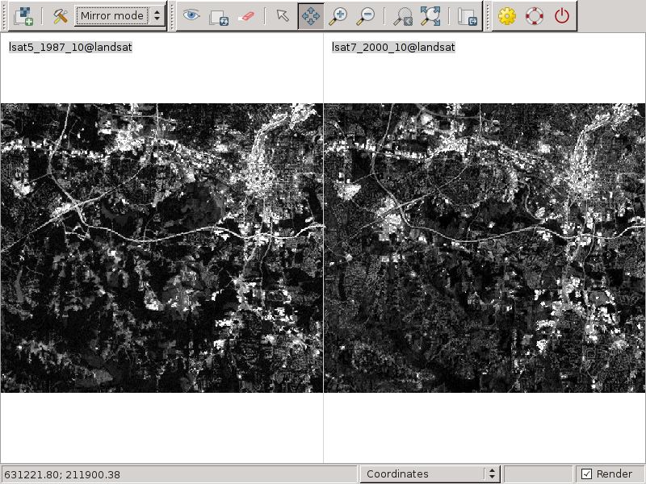
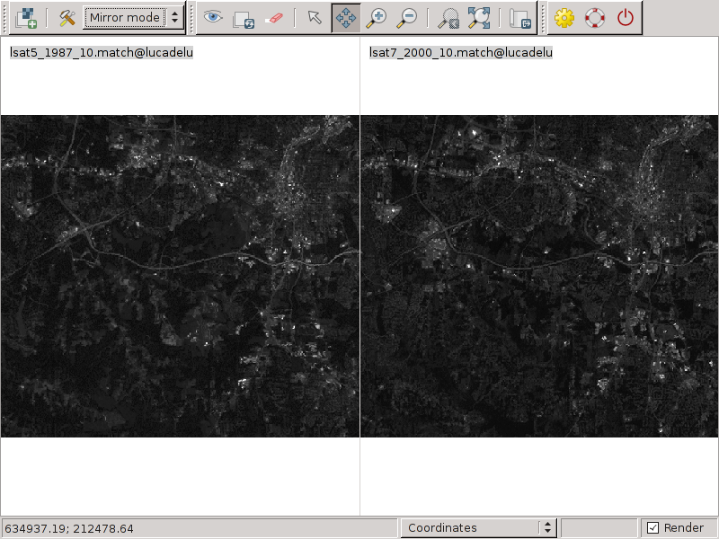

DESCRIPTION
i.histo.match performs histogram matching on the given input images.
NOTES
The histogram matching method is based on the method Cumulative Distribution
Function (CDF) of two or more histograms. Each value of original CDF is compared
with the target histogram in order to obtain the target CDF value closest to
the original value.
EXAMPLE
This example is based the North Carolina GRASS sample
data set, [complete GRASS location].
# create the output with histogram matching
i.histo.match input=lsat5_1987_10,lsat7_2000_10
# set grey color to the new maps
r.colors map=lsat5_1987_10.match color=grey
r.colors map=lsat7_2000_10.match color=grey
# visualize and compare the results
Original data:

Matched data:

SEE ALSO
i.ortho.photo,
i.rectify
AUTHORS
Laura Zampa 2004, student of Dipartimento di Informatica e
Telecomunicazioni, Facolta' di Ingegneria, University of Trento and ITC-irst,
Trento (Italy); original PERL code
Luca Delucchi, Fondazione E. Mach (Italy); implementation with Python / SQLite
Stefan Blumentrath (Norway); current, parallelized implementation with Numpy